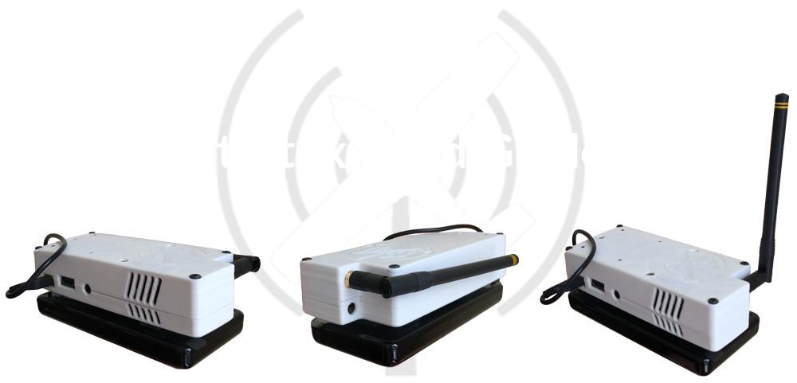
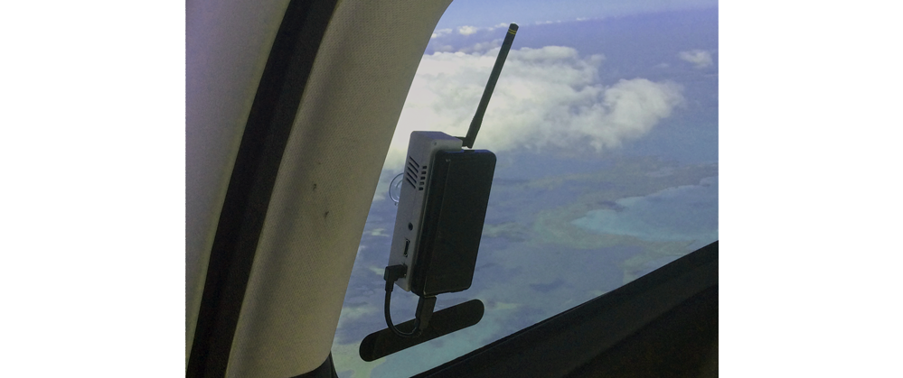

Stratux.co is reader-supported.
When you buy through links on our site we may earn an affiliate commission.
Stratux.co is a participant in the Amazon Services LLC Associates Program, an affiliate advertising program designed to provide a means for us to earn fees by linking to Amazon.com and affiliated sites.
How To Build A Stratux Box Yourself DIY
I get over 6 hours of run time with a fully charged battery with my Stratux. With the information and links on this page you can source every single part you will need to build your dual band 978MHz / 1090MHz and GPS equipped Stratux ADS-B box in a custom printed case. Hopefully this guide will help you with your own Stratux build project.
Remember, This Is Not Turn-Key
The "Stratux" concept is not turn-key! If you want a turn-key ADS-B solution then you should buy one of the many excellent commercially available products on the market. On the other hand if you are a do-it-yourself DIYer, if you like tinkering with things endlessly and want to learn new things while you're at it then a Stratux project might be right for you.
THE EASIEST CHOICE: Fully Assembled Stratux (click here)
This complete Stratux box has 5 star review history on Amazon, is 100% turn key and ready to go.
Order this pre-assembled 5 star review Stratux here: https://amzn.to/2tym22B
FlightBox: Another Complete Source For Stratux Builders to Consider
Flightbox is the result of a KickStarter project to create a commercially available Stratux box. Rather than going through the thrill, joy, and pain of sourcing all of the Stratux components yourself you should consider purchasing a FlightBox instead. The operators of www.openflightsolutions.com have done all of the dirty work for you and have consolidated the Stratux part sourcing process and they have created their own durable non-printed case.
Click here to check out the FlightBox.
Click here to check out the FlightBox.

What My Stratux Data Feed Look Like On A Typical Flight

How I Built My Stratux To Help You Build One Too!
Sources for All Parts:
1: The Case Design: Click Here to Download the Case CAD Files from ThingVerse.com
You will need to download the files and select the .stl files you want to use: the case designer, user "Helno" on Thingverse.com, kindly provided options in the file package. I used the case half that included holes for 3 suction cups and space for dual SDRs and dual antennas.
You will need to download the files and select the .stl files you want to use: the case designer, user "Helno" on Thingverse.com, kindly provided options in the file package. I used the case half that included holes for 3 suction cups and space for dual SDRs and dual antennas.
2: Print the Case: Click Here to Order the Case from MakeXYZ.com
You will upload 2 of your selected .stl files (one top half and one bottom half) to MakeXYZ.com, they will print the case and send it to you.
Caution: the white ABS is translucent and the internal LEDs from the SDRs and GPS light it up quite a bit at night. Maybe use a dark ABS instead?
You will upload 2 of your selected .stl files (one top half and one bottom half) to MakeXYZ.com, they will print the case and send it to you.
Caution: the white ABS is translucent and the internal LEDs from the SDRs and GPS light it up quite a bit at night. Maybe use a dark ABS instead?
3: Amazon.com Parts: List of Parts Above Available From Amazon.com
This is a compilation of the parts from the list above available from Amazon.com.
This is a compilation of the parts from the list above available from Amazon.com.
LINKS FOR COMPONENTS:
(1) Two NooElec NESDR Nano 2+ Tiny Black RTL-SDR USB Set
(1) Two NooElec NESDR Nano 2+ Tiny Black RTL-SDR USB Set
(2) 30mm x 30mm x 10mm 3010S 12V 0.13A Brushless DC Cooling Fan
A few notes:
(A) I used an "optional" 6 inch USB extension to route the USB GPS away from the SDRs for two reasons: (1) to get the GPS away from potential interference from the SDRs, and (2) to get the GPS away from the heat generated by the SDRs. This might be overkill and you might be able to skip this USB extension cable. If you are using an iPad and your GPS works well in the cockpit already you can probably skip the GPS altogether and save $20-$35 on your build (and get better battery life on your Stratux without GPS).
(B) Suction Cups: The case design I used has (3) 1/4" holes for "mushroom head" style suction cups. I purchased a set of (4) Adams brand "7500" series suction cups. They work great. Before preflight I plug the Stratux into its battery, stick it on a back window, point the antenna up, and the Statux goes until I turn it off after landing.
(A) I used an "optional" 6 inch USB extension to route the USB GPS away from the SDRs for two reasons: (1) to get the GPS away from potential interference from the SDRs, and (2) to get the GPS away from the heat generated by the SDRs. This might be overkill and you might be able to skip this USB extension cable. If you are using an iPad and your GPS works well in the cockpit already you can probably skip the GPS altogether and save $20-$35 on your build (and get better battery life on your Stratux without GPS).
(B) Suction Cups: The case design I used has (3) 1/4" holes for "mushroom head" style suction cups. I purchased a set of (4) Adams brand "7500" series suction cups. They work great. Before preflight I plug the Stratux into its battery, stick it on a back window, point the antenna up, and the Statux goes until I turn it off after landing.
(C) Button Head Screw M3x4mm Hex Socket (10): I used these screws to: (1) screw the Pi to the case, and (2) to create an aluminum foil/duct tape enclosure for the GPS. I cut a square of aluminum foil about with width of the case. I used 4 pieces of duct tape to encapsulate the foil. Then I cut the square tape leaving a 1/8 inch overhang of tape vs. foil (so the edge of the foil in enclosed in tape). Then I screwed this square tape/foil combo to the top half of the case using the 4 mounting points for the board-style GPS using the screws above. Then I removed the plastic case for the GPS, and using the USB extension and while joining both case halves together I slide the "naked" GPS into the "sleeve" created by the tape/foil. This allows you to remove the plastic case from the GPS, provides a secure mounting point for the GPS, and provides some shielding. Again, I think the Pi doesn't need the screws, and I think the GPS shielding is "extra" and not required, but it works for me.
4: The Antennas: High Gain Antenna & Dual MCX to MCA Cables
I am now recommending these amazing high gain antennas custom designed for Stratux. These antennas are different than the antenna I have pictured above. They are larger, there are 2 included in this package along with the cables required to plug into the SDRs. The gain on the antennas is much higher than the previous antenna I was using (which is pictured above). The previous antenna I used works great...these new high gain antennas work better!
I am now recommending these amazing high gain antennas custom designed for Stratux. These antennas are different than the antenna I have pictured above. They are larger, there are 2 included in this package along with the cables required to plug into the SDRs. The gain on the antennas is much higher than the previous antenna I was using (which is pictured above). The previous antenna I used works great...these new high gain antennas work better!
5: eBay Parts: Click on the Following Links for the eBay Parts You Will Need:
If these links are down you can search eBay with the description of what you need from the price list above.
M3 x 25MM Screw Set
(4) M3 x 25mm screws work well to screw the case halves together.
3M Dual Lock
This is how I attach the battery to the Stratux. Dual Lock is one of my favorite products in the world.
If these links are down you can search eBay with the description of what you need from the price list above.
M3 x 25MM Screw Set
(4) M3 x 25mm screws work well to screw the case halves together.
3M Dual Lock
This is how I attach the battery to the Stratux. Dual Lock is one of my favorite products in the world.

Download the Stratux Software Here:

Most importantly, I thank the Stratux builder community for putting together the many guides and resources that make this possible!